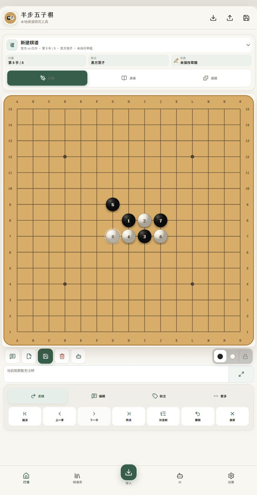
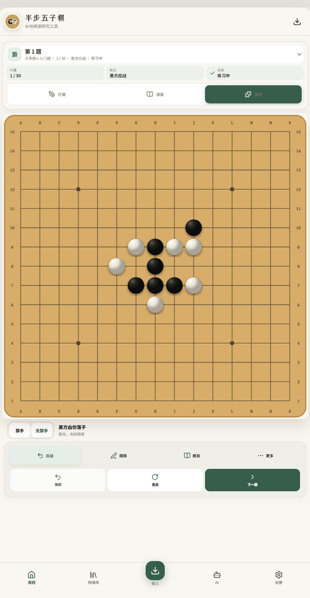
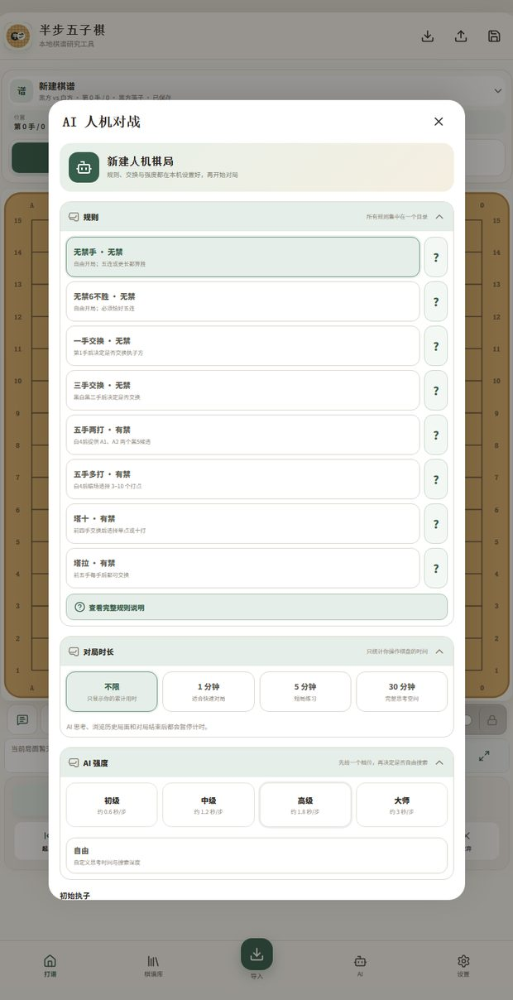
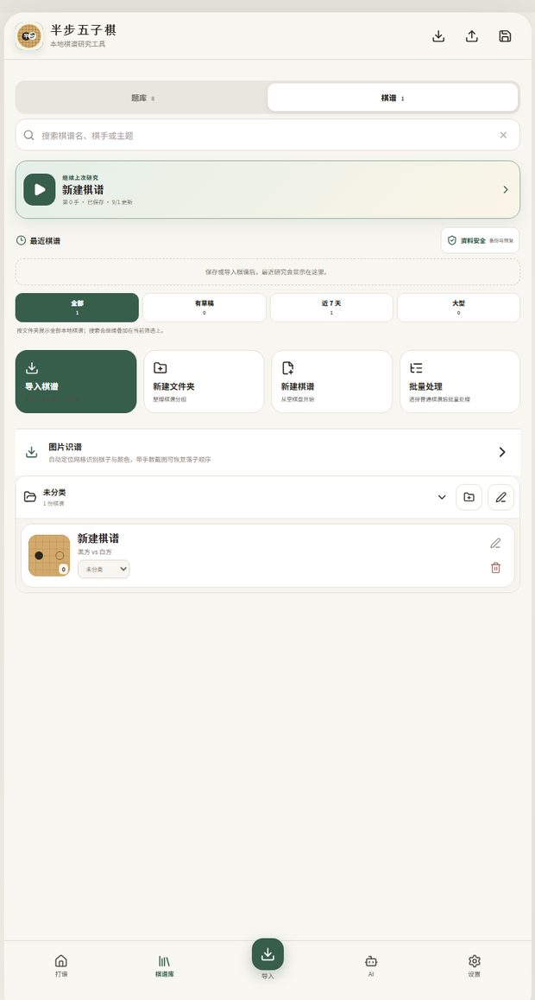

MODULE 01
打谱与记谱流
点空位落子、点棋子跳手；上/下一手、到首尾、90° 旋转与左右镜像。新增的记谱流是默认页：主线横排、变化缩进，主分支可以「设为 / 在这一支 / 切回」。画布降为「图谱」标签页，默认只画当前路径加一条最长分支，分支点标数量、可展开收起。
BOARD5–30 路 · 缩放上限 2.35 → 6 倍LONG长按环形菜单，可打三档标RULE禁手点实时提示
GOMOKU & RENJU STUDY TOOLKIT
旗舰引擎 KataGo 随包进手机、本机原生运行——不用下载任何东西：小网 3.2MB 适合边看边算，大网 int8 21.9MB 更强，开箱即用。
新增：识谱核对屏可以直接改子、专门的对弈界面（中途退出能接着下）、四种计时制的整屏比赛钟、战绩与等级分、整局复盘，还有 14 张棋盘 + 16 种棋子材质。打谱、导入、分析、做题照旧全程可离线。
网页版网址（iPhone / iPad / 电脑浏览器均可直接打开）：gugujiao953-ship-it.github.io/banbu-gomoku/app/

两个倍率都是同一台测试机（Redmi K20 Pro / 骁龙 855）、同局面、限预算的实测值，不是理论峰值，你的设备会不同。体积一律按 MiB 写作「MB」，与 GitHub 资产页、安卓安装器显示的数一致：大网 21.9MB、小网 3.2MB、网页版冠军权重包 38.4MB；安装包因引擎与权重随包 90.4MB。本页棋盘画面均为应用实拍截图。
SEC.01 — CORE CAPABILITIES · MODULES 08
打谱 · 导入 · 识谱核对 · 分析 · 对弈 · 战绩 · 复盘 · 棋钟——八个模块共用同一套棋盘与棋谱会话，翻面时完整保留现场。



点空位落子、点棋子跳手；上/下一手、到首尾、90° 旋转与左右镜像。新增的记谱流是默认页：主线横排、变化缩进，主分支可以「设为 / 在这一支 / 切回」。画布降为「图谱」标签页，默认只画当前路径加一条最长分支，分支点标数量、可展开收起。
SGF、RenLib 的 LIB 大型开局库、DP 分页谱、DB 索引、JSON、POS、ZIP 以及 SGF 同族扩展名照收。安卓上微信、QQ 或文件管理器里点棋谱，选「用半步打开」就进应用，一次可以选多份，冷启动也接得住。
识别完不再直接建谱，而是停在核对屏：识别出的子按识别到的网格画成半透明圆圈叠在原图上，网格线一并画出来，顶上写明共几子（黑几 / 白几）与置信度，多子、少子、黑白反了、整体错一格都看得出来。确认导入才建谱。
KataGo 与 Rapfi 随包自带，不用在应用外下载任何引擎。分析面板三页：计算 / 复盘 / 胜率；重开同一份棋谱能载入上次的分析结果；切出去引擎立刻停，回来自己续。
对弈有独立的一屏：双方信息、时间、最近几手，不在打谱页里挤。中途退出，下次问你要不要接着下；引擎读数不再把界面顶得上下跳。
人机 / VCF 两个标签：场次、胜负和、胜率、连串、累计用时。等级分初级 AI = 1000 分，每档 +240，锚的是自家 AI 档位。只存本机，上限 400 条。
整局复盘：失误分档（最佳 / 疑问 / 失误 / 败着 / 错失必胜）+ 最差三手 + 可复制的中文讲解词；游标竖线与棋盘双向联动，每手读秒，终局自动存档。
四种计时制的整屏比赛钟：菲舍尔加秒 / 布龙斯坦延时 / 包干 / 读秒，点自己那半屏交时；剩余 ≤10 秒整屏转红，到 0 判负。VCF 出题生成器与题库增删改、合并也在这一版就位。
SEC.02 — APPEARANCE SYSTEM · 23 套主题
23 套主题（20 套逐屏量过对比度）· 公用效果实时预览 · 默认关闭，想要再开
外观新增成品材质：棋盘 14 种（原木、玉石、练习本、翡翠、青花瓷、白玉、深胡桃木、磨砂玻璃、电路、极简、尊贵黑金、苍白世界、卡哇伊、极光），棋子 16 种（经典、玉石、云子、墨蓝、黑白极简、勾叉、青花瓷、雪晶、终端字符、黑钻白金、鎏金、钻石等），每套都带预览，不用下载。棋盘 / 棋子材质与界面主题各自独立选。
「外观 → 公用效果」多了实时预览舞台：跑的就是实盘那套动画代码，换方案立刻见效，不用进对局里试。落子交互 11 套、棋子进场 12 套，两档默认关闭，想要再开。另给外观补了三笔账：34 处「亮强调色底 + 写死白字」改成跟随主题，深色主题里约 15 处写死浅色底的卡片修掉（最低只有 2.17:1），「界面字号」原先只管两个页面、现在覆盖全部界面（产物里变量引用 253 → 1042 处）——逐条见「03 更新」第 17 条。
色板为页面示意 · 非应用截图
SEC.03 — CHANGELOG / v1.2.0 · ENTRIES 18
本版新增：引擎 · 对弈 · 识谱复盘 · 界面——18 条逐一口径，含实测数字与边界。
SEC.04 — SPECIFICATION · WEB / ANDROID · PWA 可离线
SEC.05 — KNOWN LIMITS · NOT FINISHED · 共 13 条
还没验证 / 故意默认关闭——这一节和功能清单一样重要。